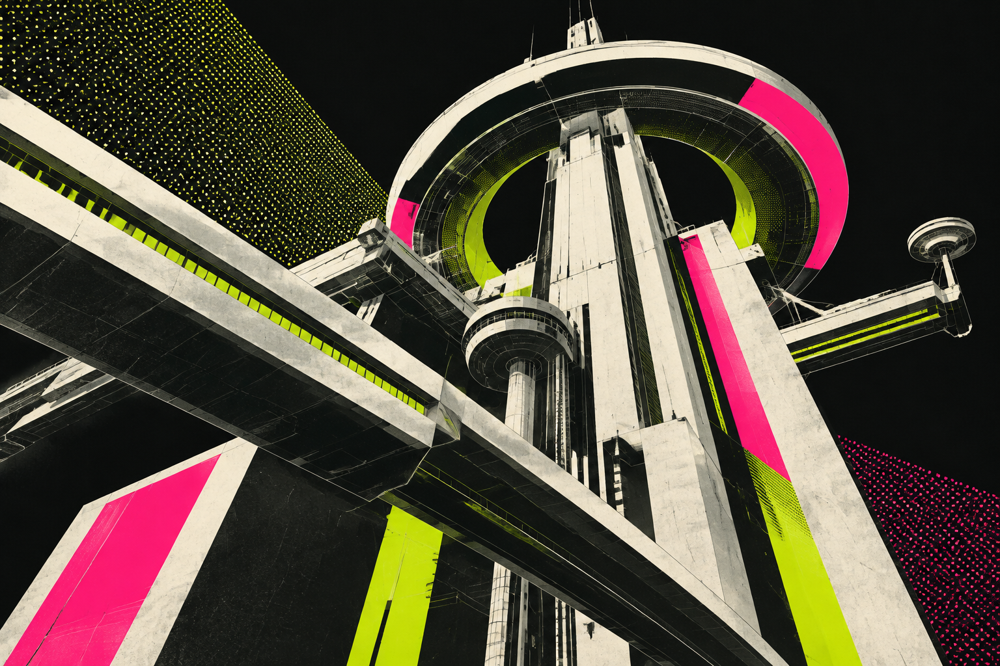
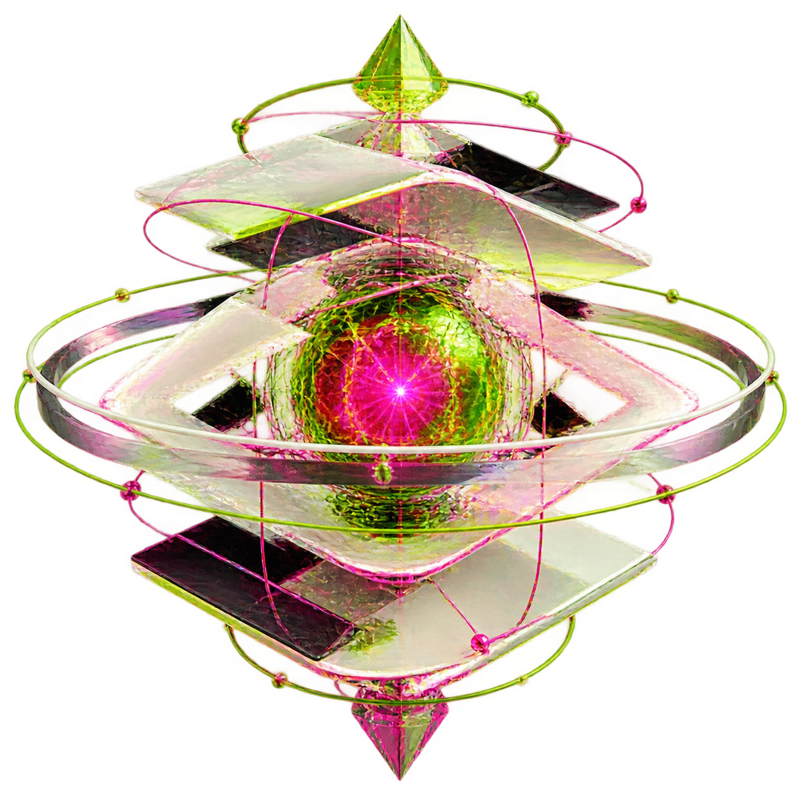

<!doctype html>
<html lang="zh-CN">
<head>
  <meta charset="utf-8">
  <title>MARATHON // HTML Motion Kit</title>
  <link rel="stylesheet" href="../../engine/base.css">
  <style>
    :root { --lime: #c6ff00; --pink: #ff2e88; --bone: #ece9df; --ink: #07080a;
      --disp: "Bahnschrift", "DIN Condensed", "Arial Narrow", "Microsoft YaHei", sans-serif; }
    .stage { background: var(--ink); }
    .scene { background: var(--ink); font-family: var(--disp); color: var(--bone); }
    .mono { font-family: var(--mono); letter-spacing: .08em; text-transform: uppercase; }
    /* HUD chrome shared by every scene */
    .hud { position: absolute; inset: 40px; pointer-events: none; z-index: 50; }
    .hud .c { position: absolute; width: 48px; height: 48px; border: 3px solid var(--bone); }
    .hud .tl { left: 0; top: 0; border-right: 0; border-bottom: 0; } .hud .tr { right: 0; top: 0; border-left: 0; border-bottom: 0; }
    .hud .bl { left: 0; bottom: 0; border-right: 0; border-top: 0; } .hud .br { right: 0; bottom: 0; border-left: 0; border-top: 0; }
    .hud .lab { position: absolute; font: 600 20px var(--mono); letter-spacing: .14em; color: var(--bone); opacity: .8; }
    .hud .lab.a { left: 70px; top: 10px; } .hud .lab.b { right: 70px; top: 10px; text-align: right; }
    .hud .lab.c2 { left: 70px; bottom: 10px; color: var(--lime); } .hud .lab.d { right: 70px; bottom: 10px; }
    .scan { position: absolute; inset: 0; z-index: 40; pointer-events: none; opacity: .18;
      background: repeating-linear-gradient(0deg, rgba(255,255,255,.12) 0 1px, transparent 1px 4px); }
    .halftone { position: absolute; pointer-events: none; background-image: radial-gradient(var(--c, var(--lime)) 28%, transparent 30%); background-size: 14px 14px; }
    .mega { font: 800 220px/0.86 var(--disp); letter-spacing: -.02em; text-transform: uppercase; margin: 0; }
    .tag { display: inline-block; padding: 8px 16px; background: var(--lime); color: var(--ink); font: 700 26px var(--mono); letter-spacing: .12em; }
    .tag.pink { background: var(--pink); color: var(--bone); }
    .bar-block { position: absolute; background: var(--pink); }
    /* boot */
    .boot .title-wrap { position: absolute; left: 140px; top: 330px; z-index: 30; }
    .boot .sub { font: 600 44px var(--disp); letter-spacing: .3em; margin-top: 34px; color: var(--bone); }
    /* route */
    .km { position: absolute; right: 150px; top: 170px; text-align: right; z-index: 30; }
    .km b { display: block; font: 800 200px/1 var(--disp); color: var(--lime); }
    .km span { font: 600 30px var(--mono); letter-spacing: .2em; }
    .route-copy { position: absolute; left: 150px; bottom: 300px; z-index: 30; }
    .route-copy h2 { font: 800 96px/1 var(--disp); margin: 14px 0 0; text-transform: uppercase; }
    .runner-wrap { position: absolute; left: 1470px; top: 370px; z-index: 25; }
    /* modules */
    .mod-bg { position: absolute; inset: -60px; width: calc(100% + 120px); height: calc(100% + 120px); object-fit: cover; filter: contrast(1.1) brightness(.62); }
    .mods { position: absolute; left: 140px; top: 180px; z-index: 30; display: grid; gap: 12px; }
    .mod { display: grid; grid-template-columns: 90px 440px; align-items: center; background: rgba(7,8,10,.86); border-left: 8px solid var(--lime); padding: 16px 26px; }
    .mod:nth-child(even) { border-color: var(--pink); }
    .mod i { font: 700 28px var(--mono); font-style: normal; color: var(--lime); }
    .mod b { font: 800 50px var(--disp); letter-spacing: .04em; }
    .mod em { grid-column: 2; font: 500 24px var(--mono); font-style: normal; color: #a9a79f; letter-spacing: .06em; }
    /* core */
    .core-img { position: absolute; left: 660px; top: 240px; width: 600px; height: 600px; z-index: 20; }
    .stat3 { position: absolute; z-index: 30; }
    .stat3 b { display: block; font: 800 120px/1 var(--disp); }
    .stat3 span { font: 600 24px var(--mono); letter-spacing: .18em; color: #a9a79f; }
    /* pipeline */
    .pipe { position: absolute; left: 0; right: 0; top: 440px; display: flex; justify-content: center; gap: 70px; z-index: 30; }
    .node { width: 330px; height: 200px; border: 3px solid var(--bone); background: rgba(7,8,10,.85); padding: 22px; position: relative; }
    .node .n { font: 700 24px var(--mono); color: var(--lime); }
    .node b { display: block; font: 800 44px/1.1 var(--disp); margin: 18px 0 14px; white-space: nowrap; }
    .node small { font: 500 22px var(--mono); color: #a9a79f; }
    .node.hot { border-color: var(--pink); }
    .pipe-title { position: absolute; left: 140px; top: 170px; z-index: 30; }
    /* outro */
    .outro .center { z-index: 30; }
    .outro .mega { font-size: 260px; }
    .captions { white-space: nowrap; font-size: 34px; bottom: 56px; font-family: var(--disp); border-radius: 0; background: rgba(7,8,10,.82); border-left: 6px solid var(--lime); letter-spacing: .04em; }
  </style>
</head>
<body>
<script type="module">
import { createVideo, MeshPuppet, Space3D, fx, rng } from '../../engine/index.js';

const LIME = '#c6ff00', PINK = '#ff2e88', BONE = '#ece9df';
const W = 1920, H = 1080, BPM = 124, BEAT = 60 / BPM;
const runner = new MeshPuppet({ src: 'assets/runner.svg', width: 420, height: 630, headLine: 0.28, seed: 3, sway: 0.6 });

// HUD frame + scanlines on every scene: corner brackets, index, live timecode.
function hud(tl, el, idx, label) {
  el.insertAdjacentHTML('beforeend', `<div class="scan"></div><div class="hud">
    <i class="c tl"></i><i class="c tr"></i><i class="c bl"></i><i class="c br"></i>
    <span class="lab a">MRTN//${String(idx).padStart(2, '0')} — ${label}</span>
    <span class="lab b">HTML·JS·WEBAUDIO</span>
    <span class="lab c2">● REC</span><span class="lab d tc">00:00:00</span></div>`);
  const tc = el.querySelector('.tc'), rec = el.querySelector('.c2');
  tl.add((lt, t) => {
    const f = Math.floor(t * 30);
    tc.textContent = `${String(Math.floor(t / 60)).padStart(2, '0')}:${String(Math.floor(t % 60)).padStart(2, '0')}:${String(f % 30).padStart(2, '0')}`;
    rec.style.opacity = Math.floor(t / (BEAT * 2)) % 2 ? 0.3 : 1;
  });
  fx.staggerIn(tl, el.querySelectorAll('.hud .c'), { at: 0.1, stagger: 0.05, dur: 0.4, from: { scale: 1.8, opacity: 0 } });
}

// Rhythm pulse: multiply scale on the beat (kick at every beat).
const pulse = (tl, el, amt = 0.03) =>
  tl.modify(el, (lt, t) => { const p = (t % BEAT) / BEAT; return { scale: 1 + amt * Math.exp(-p * 7) }; });

// Wavy 3D marathon route on the XZ plane.
function routePts(n = 160, seed = 4) {
  const pts = [];
  for (let i = 0; i < n; i++) {
    const z = i * 55;
    pts.push([Math.sin(i * 0.07 + seed) * 520 + Math.sin(i * 0.19) * 140, 0, z]);
  }
  return pts;
}

const scenes = [];
// 01 BOOT — 3D grid fly-through, scrambled mega title, bass drop.
scenes.push({
  id: 'boot', title: '01 启动', dur: 6.5, className: 'boot',
  html: `<div class="halftone" style="right:0;top:0;width:620px;height:1080px;opacity:.35;-webkit-mask-image:linear-gradient(90deg,transparent,#000)"></div>
    <div class="bar-block b1" style="left:0;top:250px;width:1920px;height:14px"></div>
    <div class="title-wrap">
      <span class="tag t1">SYS.BOOT // v2.0</span>
      <h1 class="mega m1" data-text="MARATHON"></h1>
      <div class="sub s1">HTML MOTION KIT — 网页即视频</div>
    </div>`,
  build(tl, el) {
    const sp = new Space3D(el, { fog: [300, 4200] });
    sp.add(Space3D.grid(8000, 250, { color: BONE, opacity: 0.35, width: 1 }));
    sp.add(Space3D.lattice(8000, 250, { color: LIME, size: 3, opacity: 0.9, twinkle: true }));
    sp.add(Space3D.cloud(360, [6000, 1600, 6000], { y: -900, color: PINK, size: 2.5, twinkle: true }, 11));
    const gate = sp.add(Space3D.box(900, 700, 40, { y: -350, z: 1400, color: LIME, width: 2.5 }));
    const gate2 = sp.add(Space3D.box(1300, 900, 40, { y: -450, z: 2800, color: PINK, width: 2 }));
    sp.cam.y = -380; sp.cam.rx = -8;
    tl.fromTo(sp.cam, { z: -2600, ry: -18, rz: 6 }, { z: 600, ry: 8, rz: 0 }, { at: 0, dur: 6.5, ease: 'inOutCubic', sfx: null });
    tl.to(gate, { ry: 90 }, { at: 0, dur: 6.5, ease: 'linear' });
    tl.to(gate2, { ry: -60 }, { at: 0, dur: 6.5, ease: 'linear' });
    sp.bind(tl);
    hud(tl, el, 1, 'BOOT SEQUENCE');
    tl.sfx('air', 0.2, { dur: 1.5, volume: 0.8 });
    tl.fromTo(el.querySelector('.b1'), { scaleX: 0 }, { scaleX: 1 }, { at: 0.4, dur: 0.9, ease: 'outExpo' });
    el.querySelector('.b1').style.transformOrigin = '0 50%';
    tl.from(el.querySelector('.t1'), { x: -80, opacity: 0 }, { at: 0.8, dur: 0.5, ease: 'outCubic' });
    fx.scramble(tl, el.querySelector('.m1'), { at: 1.0, dur: 0.9, sfx: null });
    tl.sfx('thump', 1.75);
    fx.glitch(tl, el.querySelector('.m1'), { at: 1.75, dur: 0.6, amp: 26 });
    fx.shake(tl, el.querySelector('.title-wrap'), { at: 1.75, dur: 0.4, amp: 10 });
    fx.textIn(tl, el.querySelector('.s1'), { at: 2.3, preset: 'rise', stagger: 0.03 });
    pulse(tl, el.querySelector('.m1'), 0.025);
    tl.caption('一个完全基于 HTML / JS 的动画视频框架', 2.8, 3.2);
  },
});

// 02 ROUTE — the "course": a 3D route draws itself, runner puppet, km counter.
scenes.push({
  id: 'route', title: '02 路线', dur: 7, transition: { type: 'slash', dur: 0.7, sfx: 'air' },
  html: `<div class="km"><b class="kmv">0</b><span>KM // TIMELINE LENGTH</span></div>
    <div class="route-copy"><span class="tag pink">01 / TIMELINE</span><h2 class="h">每一帧都是 t 的函数</h2>
    <div class="mono" style="font-size:26px;margin-top:14px;color:#a9a79f">SEEK · SCRUB · FRAME-EXACT EXPORT</div></div>
    <div class="runner-wrap"></div>`,
  build(tl, el) {
    const sp = new Space3D(el, { fog: [200, 5200] });
    const pts = routePts();
    sp.add(Space3D.grid(12000, 400, { z: 4000, color: BONE, opacity: 0.18 }));
    const glow = sp.add(Space3D.polyline(pts, { color: PINK, width: 14, opacity: 0.25, progress: 0 }));
    const line = sp.add(Space3D.polyline(pts, { color: LIME, width: 4, progress: 0 }));
    const marks = sp.add(Space3D.points(pts.filter((_, i) => i % 8 === 0).map(([x, y, z]) => [x, -40, z]), { color: BONE, size: 7, square: true, progress: 0 }));
    const posts = [];
    for (let i = 8; i < pts.length; i += 16) posts.push(sp.add(Space3D.polyline([pts[i], [pts[i][0], -260, pts[i][2]]], { color: PINK, width: 2, progress: 0 })));
    sp.cam.y = -700; sp.cam.rx = -24;
    tl.fromTo(sp.cam, { z: -1400, x: -600, ry: 14 }, { z: 2400, x: 300, ry: -10 }, { at: 0, dur: 7, ease: 'inOutSine' });
    tl.to(line, { progress: 1 }, { at: 0.3, dur: 5.5, ease: 'inOutCubic', sfx: null });
    tl.to(glow, { progress: 1 }, { at: 0.3, dur: 5.5, ease: 'inOutCubic', sfx: null });
    tl.to(marks, { progress: 1 }, { at: 0.3, dur: 5.5, ease: 'inOutCubic', sfx: null });
    posts.forEach((p, i) => tl.to(p, { progress: 1 }, { at: 0.6 + i * 0.5, dur: 0.4, ease: 'outCubic' }));
    sp.bind(tl);
    hud(tl, el, 2, 'ROUTE / TIMELINE');
    fx.counter(tl, el.querySelector('.kmv'), { from: 0, to: 42.195, decimals: 3, at: 0.4, dur: 5.4, ease: 'inOutCubic', sfx: null });
    tl.from(el.querySelector('.route-copy'), { x: -120, opacity: 0 }, { at: 0.6, dur: 0.7, ease: 'outExpo' });
    fx.glitch(tl, el.querySelector('.h'), { at: 0.9, dur: 0.4 });
    const wrap = el.querySelector('.runner-wrap');
    wrap.appendChild(runner.el);
    tl.from(wrap, { y: 400, opacity: 0 }, { at: 1.0, dur: 0.9, ease: 'outBack' });
    tl.add((lt) => runner.update(lt));
    runner.emote('bounce', 2.0, 0.5).emote('nod', 3.6, 0.8).emote('tilt', 5.2, 1);
    fx.float(tl, wrap, { amp: 14, speed: 0.5 });
    tl.sfx('soft', 1.0, { freq: 1320 });
    tl.caption('场景、转场、字幕与音效，统一在一条可拖动的时间轴上', 1.4, 4.6);
  },
});

// 03 MODULES — megastructure bg with parallax, module list with scanned entry.
scenes.push({
  id: 'modules', title: '03 模块', dur: 6.5, transition: { type: 'shutter', dur: 0.8, n: 14, sfx: 'air' },
  html: `
    <div class="halftone" style="--c:${PINK};left:0;bottom:0;width:900px;height:420px;opacity:.5;-webkit-mask-image:linear-gradient(0deg,#000,transparent)"></div>
    <div class="mods">
      <span class="tag" style="justify-self:start">02 / MODULES</span>
      <div class="mod"><i>A1</i><b>TIMELINE</b><em>可寻址 · 缓动 · 相对时间</em></div>
      <div class="mod"><i>B2</i><b>SPACE3D</b><em>点 · 线 · 面 三维渲染</em></div>
      <div class="mod"><i>C3</i><b>PUPPET</b><em>网格变形 · 类 LIVE2D</em></div>
      <div class="mod"><i>D4</i><b>WEBAUDIO SFX</b><em>程序化音效 · 离线混音</em></div>
      <div class="mod"><i>E5</i><b>FX LIBRARY</b><em>粒子 · 故障 · 打字 · 光标</em></div>
    </div>`,
  build(tl, el) {
    const bg = el.querySelector('.mod-bg');
    tl.fromTo(bg, { scale: 1.18, x: 60, rotate: -1.5 }, { scale: 1.05, x: -60, rotate: 0.5 }, { at: 0, dur: 6.5, ease: 'linear' });
    hud(tl, el, 3, 'MODULE INDEX');
    tl.from(el.querySelector('.mods .tag'), { x: -60, opacity: 0 }, { at: 0.6, dur: 0.4 });
    fx.staggerIn(tl, el.querySelectorAll('.mod'), { at: 0.9, stagger: BEAT, dur: 0.5, from: { x: -140, opacity: 0, clip: 0 }, ease: 'outExpo', sfx: 'soft' });
    el.querySelectorAll('.mod b').forEach((b, i) => fx.glitch(tl, b, { at: 0.9 + i * BEAT, dur: 0.3, amp: 14, seed: i + 2 }));
    tl.caption('GPT-image 生成的背景、角色和物件，直接成为场景素材', 3.4, 2.8);
  },
});

// 04 CORE — rotating 3D point sphere + rings around the generated core image.
scenes.push({
  id: 'core', title: '04 核心', dur: 6.5, transition: { type: 'zoom', dur: 0.8, sfx: 'air' },
  html: `
    <div class="stat3" style="left:150px;top:260px"><b class="c1" style="color:${LIME}">0</b><span>FPS // FRAME EXACT</span></div>
    <div class="stat3" style="left:150px;top:560px"><b class="c2">0</b><span>PROCEDURAL SFX</span></div>
    <div class="stat3" style="right:150px;top:260px;text-align:right"><b class="c3" style="color:${PINK}">0</b><span>RUNTIME DEPS</span></div>
    <div class="stat3" style="right:150px;top:560px;text-align:right"><b>3D</b><span>POINT · LINE · PLANE</span></div>`,
  build(tl, el) {
    const sp = new Space3D(el, { fog: [400, 3200], z: 10 });
    const sph = sp.add(Space3D.sphere(520, 700, { color: BONE, size: 2.2, opacity: 0.8, twinkle: true }));
    const r1 = sp.add(Space3D.ring(640, 120, { color: LIME, width: 2.5, rx: 72, progress: 0 }));
    const r2 = sp.add(Space3D.ring(700, 120, { color: PINK, width: 2, rx: 60, rz: 40, progress: 0 }));
    const r3 = sp.add(Space3D.ring(760, 120, { color: BONE, width: 1, rx: 85, rz: -30, progress: 0 }));
    const plane = sp.add(Space3D.plane(1800, 1800, { y: 560, color: 'rgba(198,255,0,0.05)', stroke: 'rgba(198,255,0,.4)', width: 1 }));
    sp.add(Space3D.grid(1800, 150, { y: 560, color: LIME, opacity: 0.25 }));
    sp.cam.z = -1900; sp.cam.y = -160; sp.cam.rx = -6;
    tl.fromTo(sph, { ry: 0, s: 0.2 }, { ry: 160, s: 1 }, { at: 0, dur: 6.5, ease: 'outCubic' });
    [r1, r2, r3].forEach((r, i) => { tl.to(r, { progress: 1 }, { at: 0.5 + i * 0.25, dur: 1.2, ease: 'inOutCubic', sfx: null }); tl.to(r, { ry: 180 * (i % 2 ? -1 : 1) }, { at: 0, dur: 6.5, ease: 'linear' }); });
    tl.fromTo(sp.cam, { ry: -25 }, { ry: 25 }, { at: 0, dur: 6.5, ease: 'inOutSine' });
    sp.bind(tl);
    const core = el.querySelector('.core-img');
    tl.from(core, { scale: 0.3, opacity: 0, blur: 20 }, { at: 0.4, dur: 1.1, ease: 'outBack' });
    tl.modify(core, (lt) => ({ rotate: Math.sin(lt * 0.9) * 4, y: Math.sin(lt * 1.3) * 12 }));
    pulse(tl, core, 0.04);
    tl.sfx('thump', 0.5, { volume: 0.8 });
    fx.staggerIn(tl, el.querySelectorAll('.stat3'), { at: 1.2, stagger: 0.18, from: { y: 60, opacity: 0 }, ease: 'outExpo', sfx: 'soft' });
    fx.counter(tl, el.querySelector('.c1'), { to: 60, at: 1.3, dur: 1.4, sfx: null });
    fx.counter(tl, el.querySelector('.c2'), { to: 19, at: 1.5, dur: 1.4, sfx: null });
    fx.counter(tl, el.querySelector('.c3'), { from: 99, to: 0, at: 1.7, dur: 1.4, sfx: null });
    fx.particles(tl, el, { mode: 'burst', at: 3.2, count: 90, colors: [LIME, PINK, BONE], origin: [0.5, 0.5], z: 15, sfx: null });
    tl.sfx('chime', 3.2);
    tl.caption('零运行时依赖，逐帧精确导出 MP4', 3.4, 2.8);
  },
});

// 05 PIPELINE — agent workflow as connected nodes, data packets travel along.
scenes.push({
  id: 'pipeline', title: '05 流程', dur: 7, transition: { type: 'up', dur: 0.7, sfx: 'air' },
  html: `<div class="pipe-title"><span class="tag">03 / PIPELINE</span><h2 class="mega" style="font-size:120px;margin-top:16px">AGENT → MP4</h2></div>
    <svg class="links" width="1920" height="1080" style="position:absolute;inset:0;z-index:25">
      <path d="M525 540 H595" stroke="${LIME}" stroke-width="4" fill="none"/><path d="M925 540 H995" stroke="${LIME}" stroke-width="4" fill="none"/>
      <path d="M1325 540 H1395" stroke="${LIME}" stroke-width="4" fill="none"/></svg>
    <div class="pipe">
      <div class="node"><span class="n">[01]</span><b>STORYBOARD</b><small>读取项目 · 编排场景</small></div>
      <div class="node hot"><span class="n">[02]</span><b>GPT-IMAGE</b><small>assets.json → PNG</small></div>
      <div class="node"><span class="n">[03]</span><b>SCENES</b><small>HTML · 3D · FX · SFX</small></div>
      <div class="node hot"><span class="n">[04]</span><b>RENDER</b><small>CHROME → FFMPEG</small></div>
    </div>
    <div class="mono cmd" style="text-transform:none;position:absolute;left:140px;top:760px;z-index:30;font-size:34px;color:${LIME}" data-text="$ npm run render -- projects/marathon"></div>`,
  build(tl, el) {
    const sp = new Space3D(el, { fog: [200, 5000] });
    sp.add(Space3D.cloud(500, [7000, 3000, 5000], { color: BONE, size: 2, opacity: 0.5, twinkle: true }, 21));
    sp.add(Space3D.grid(9000, 300, { y: 700, color: PINK, opacity: 0.22 }));
    sp.cam.z = -1500;
    tl.fromTo(sp.cam, { x: -500, ry: -8 }, { x: 500, ry: 8 }, { at: 0, dur: 7, ease: 'linear' });
    sp.bind(tl);
    hud(tl, el, 5, 'AGENT PIPELINE');
    tl.from(el.querySelector('.pipe-title'), { y: -60, opacity: 0 }, { at: 0.5, dur: 0.6, ease: 'outExpo' });
    fx.staggerIn(tl, el.querySelectorAll('.node'), { at: 0.9, stagger: BEAT * 2, dur: 0.6, from: { y: 80, opacity: 0, rotateX: 70 }, ease: 'outBack', sfx: 'soft' });
    fx.drawPath(tl, el.querySelector('.links'), { at: 1.4, stagger: BEAT * 2, dur: 0.5 });
    // Data packets hopping across nodes.
    const pk = document.createElement('div');
    Object.assign(pk.style, { position: 'absolute', left: '0', top: '532px', width: '16px', height: '16px', background: PINK, boxShadow: `0 0 24px ${PINK}`, zIndex: 40 });
    el.appendChild(pk);
    tl.fromTo(pk, { x: 280, opacity: 0 }, { x: 1640, opacity: 1 }, { at: 3.6, dur: 1.6, ease: 'inOutQuart' });
    tl.to(pk, { opacity: 0 }, { at: 5.2, dur: 0.2 });
    tl.sfx('air', 3.6, { dur: 1.2, volume: 0.7 });
    fx.typewriter(tl, el.querySelector('.cmd'), { at: 4.2, cps: 26, sfx: null });
    tl.sfx('chime', 5.8);
    tl.caption('Agent 读项目 → 生图 → 编排 → 一条命令导出', 1.2, 4.4);
  },
});

// 06 FINISH — big finish line, confetti, bass hit, fade out.
scenes.push({
  id: 'finish', title: '06 终点', dur: 6, transition: { type: 'circle', dur: 0.9, sfx: 'air' }, className: 'outro',
  html: `<div class="halftone" style="left:0;top:0;width:1920px;height:1080px;opacity:.12"></div>
    <div class="bar-block fl" style="left:0;top:780px;width:1920px;height:18px;background:${LIME}"></div>
    <div class="center"><span class="tag pink">FINISH // 42.195 KM</span>
      <h1 class="mega f1" style="margin-top:24px;font-size:190px;white-space:nowrap">RUN YOUR STORY</h1>
      <div class="mono" style="font-size:34px;margin-top:40px;text-transform:none;color:#c6ff00">$ npm run new -- my-video</div></div>`,
  build(tl, el) {
    const sp = new Space3D(el, { fog: [200, 5000] });
    sp.add(Space3D.grid(10000, 300, { y: 420, color: BONE, opacity: 0.25 }));
    const tun = [];
    for (let i = 0; i < 12; i++) tun.push(sp.add(Space3D.quad(2400, 1400, { z: i * 500, color: 'transparent', fill: false, stroke: i % 3 === 0 ? LIME : i % 3 === 1 ? PINK : BONE, width: 2 })));
    sp.cam.z = -900;
    tl.fromTo(sp.cam, { z: -900, rz: -4 }, { z: 2600, rz: 3 }, { at: 0, dur: 6, ease: 'inOutCubic', sfx: null });
    sp.bind(tl);
    hud(tl, el, 6, 'FINISH LINE');
    const fl = el.querySelector('.fl'); fl.style.transformOrigin = '50% 50%';
    tl.fromTo(fl, { scaleX: 0 }, { scaleX: 1 }, { at: 0.6, dur: 0.6, ease: 'outExpo' });
    fx.textIn(tl, el.querySelector('.f1'), { at: 0.9, preset: 'drop', stagger: 0.05, sfx: 'air' });
    tl.sfx('thump', 1.6);
    fx.glitch(tl, el.querySelector('.f1'), { at: 1.6, dur: 0.5, amp: 22 });
    fx.particles(tl, el, { mode: 'confetti', at: 1.6, count: 140, colors: [LIME, PINK, BONE], origin: [0.5, 0.45], z: 20, sfx: 'chime' });
    tl.to(el, { opacity: 0 }, { at: 5.1, dur: 0.9 });
  },
});

// Total length (transitions overlap) → procedural techno bed spanning the whole video.
const total = scenes.reduce((s, sc, i) => s + sc.dur - (i ? sc.transition?.dur ?? 0.8 : 0), 0);
const boot = scenes[0].build;
scenes[0].build = (tl, el, ctx) => {
  tl.sfx('beat', 1.75, { bpm: BPM, dur: total - 1.75, volume: 0.42, pattern: 'x...x...x...x.x.', root: 55, fade: 2.5, fadeIn: 1.2, warm: true });
  return boot(tl, el, ctx);
};

await createVideo({ width: W, height: H, fps: 30, ready: [runner.ready], scenes,
  theme: { accent: LIME, accent2: PINK, bg: '#07080a' } });
</script>
</body>
</html>
